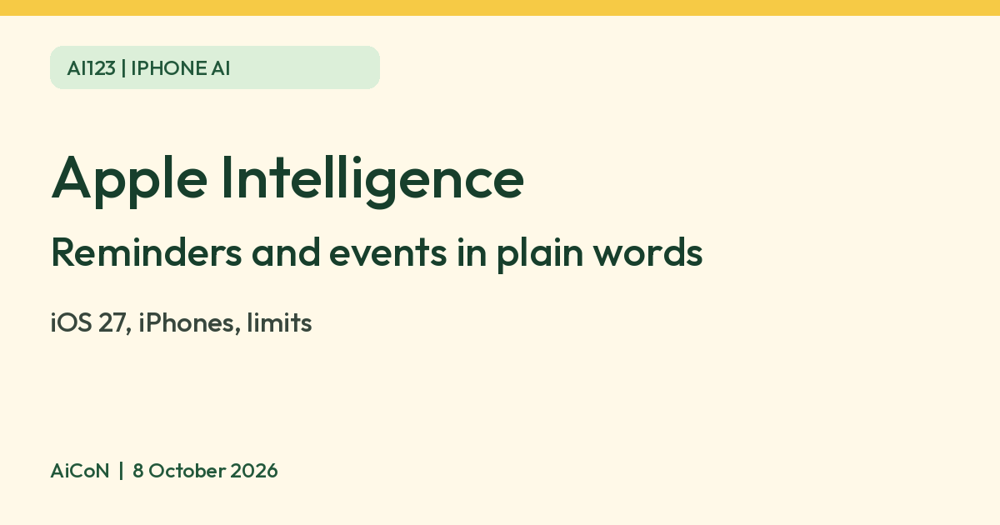

Apple Intelligence: set reminders and calendar events by describing them
Apple says that with iOS 27 on supported iPhones you can describe a reminder, a calendar event or a shortcut in natural language. Apple lists device, language, storage and usage-limit conditions. Check what it creates before you rely on it.

What it is
Apple Intelligence is Apple's AI system built into iOS, iPadOS and macOS. Apple's India support page for the "next generation" of Apple Intelligence lists, among the features that come with the 27.0 software releases, three that help you organise your day: describe a calendar event in natural language, describe a reminder in natural language, and describe a shortcut in natural language. Apple lists these for iPhone, iPad and Mac.
What you need, per Apple
| Software | iOS 27 (iPadOS 27 or macOS 27 on those devices). Apple says the features arrive automatically on eligible devices when you update. |
|---|---|
| iPhone | iPhone 16 models or later, iPhone 15 Pro or iPhone 15 Pro Max, or iPhone Air, per Apple's support page. |
| Storage | Up to 8 GB on most supported iPhones. Up to 14 GB on iPhone 17 Pro, iPhone 17 Pro Max and iPhone Air. |
| Language | Apple says the device language and Siri language must be the same supported language. English is on its list. Apple notes some features are not in all languages or regions. |
Limits to know
- Apple says features that use server-side models have daily usage limits. It names the shortcut feature "Describe a shortcut", which it marks as possibly limited. It also says expanded access will be available for a fee in the future.
- Apple does not say on this page how each describe feature is opened, so check the Reminders, Calendar and Shortcuts apps on your own iPhone.
- Check the title, date, time and alert that the AI sets. A wrong time on a reminder or event is easy to miss.
- An older iPhone will not get these features. We did not verify support for Indian languages other than English.
- We did not test any of this ourselves.
Frequently asked questions
Do I have to pay?
Apple says some server-based features have daily limits and that expanded access will be available for a fee in the future. The page names no current price, so we quote none.
Does my iPhone qualify?
Check the device list on Apple's support page above.
Does it work in Hindi?
We did not verify this. Apple's page lists English among the supported languages.
Sources: Apple Support India: How to get the next generation of Apple Intelligence. Checked 8 October 2026.